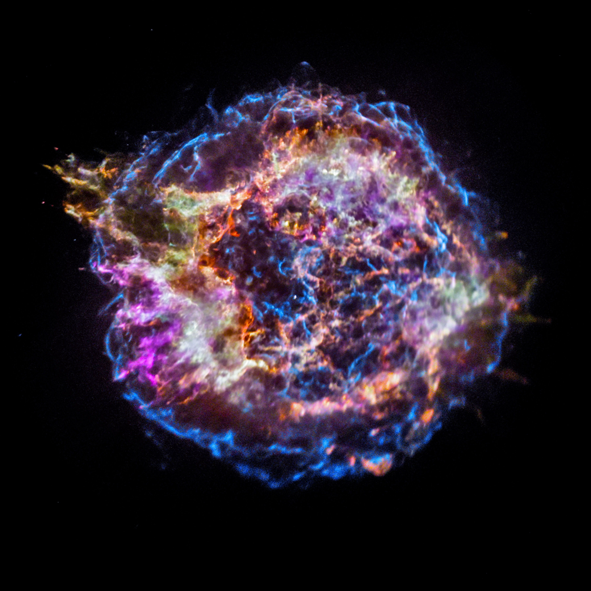
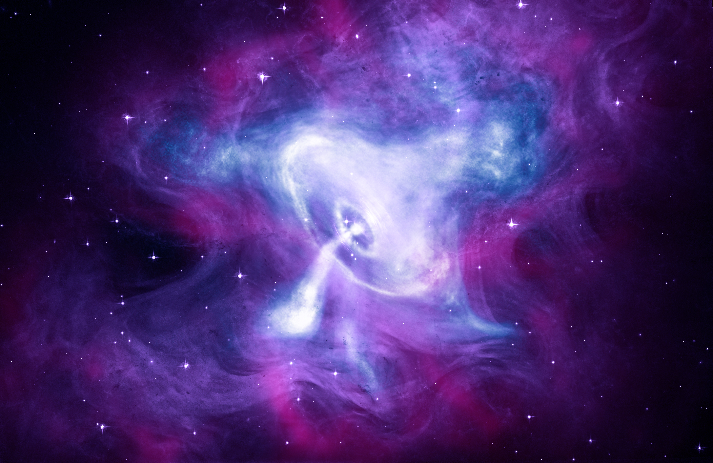
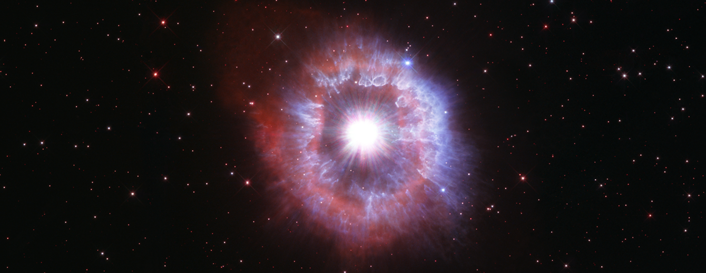

01БЛИЖАЙШИЙ СОСЕД
Луна
Самый доступный объект для старта: кратеры и рельеф хорошо видны даже в небольшой оптике.
NOCTIS помогает сделать первый шаг в любительской астрономии: разобраться, что искать в небе, как наблюдать и какое снаряжение действительно нужно.
Три взгляда на космос — от масштабных звёздных областей до выразительных деталей далёких туманностей.



Изображения загружаются из локальной папки images/.
Простые цели для первых наблюдений. Выбери объект, чтобы узнать, с чего начать.
Самый доступный объект для старта: кратеры и рельеф хорошо видны даже в небольшой оптике.
Яркая планета и удобная цель для знакомства с наблюдениями через бинокль или телескоп.
Узнаваемое созвездие, с которого удобно учиться находить характерные фигуры на небе.
Хороший следующий шаг после созвездий — наблюдать группы звёзд и сравнивать их форму.
Подборка ознакомительная — видимость объектов зависит от даты, времени и места наблюдения.
Не нужно покупать дорогой телескоп в первый же день. Начни с нескольких простых действий.
Найди участок с открытым горизонтом и меньшим количеством искусственного света.
Проведи 15–20 минут без яркого экрана, чтобы заметить больше слабых звёзд.
Начни с Луны или яркого созвездия и постепенно переходи к более слабым объектам.
Фиксируй дату, место и то, что увидел. Так прогресс становится заметнее.
Отметь необходимое — и ничего важного не останется дома.
Идеи для наблюдений, которые помогут спланировать следующую ночь под открытым небом.
Ищи контраст рельефа вдоль линии терминатора.
Попробуй найти Орион и соседние яркие звёзды.
Сравни наблюдение глазами и в бинокль.
Выбери тёмное место и попробуй вести журнал наблюдений.
Для первых наблюдений достаточно минимального набора. Главное — комфорт и тёмное небо.
Всё необходимое для комфортного старта.
Когда захочется рассмотреть больше деталей.
Выбери одну цель, выйди на улицу и потрать несколько минут на то, чтобы просто смотреть вверх.
Выбрать первую цель